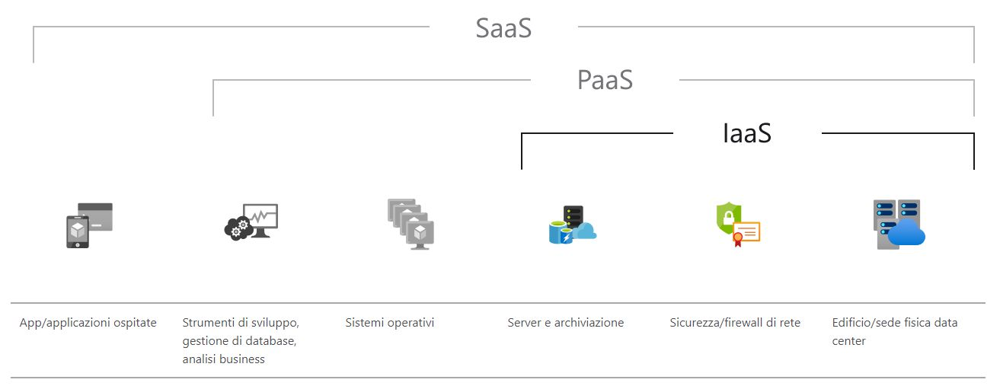
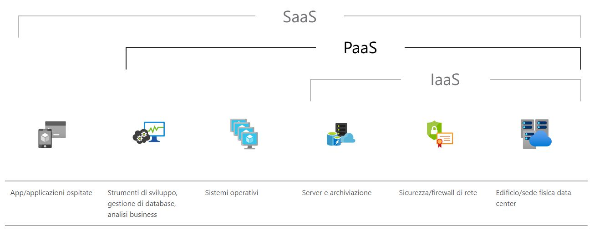
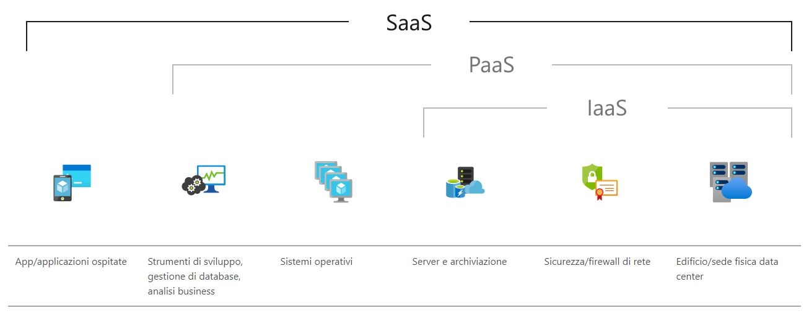

COS'È IL CLOUD COMPUTING
Dall’inglese cloud significa “nuvola” e dunque, cloud computing è una nuvola informatica.
In parole semplici, il cloud computing è la distribuzione di servizi di calcolo, come server, risorse di archiviazione, database, rete, software, analisi e intelligence, tramite Internet ("il cloud").
Questo tipo di architettura separa i client gli uni dagli altri per consentire una soluzione scalabile dove produttori di dati e consumatori di dati sono indipendenti.
Sempre più flussi di lavoro infatti avvengono in cloud, questo perchè nei cloud sarà il fornitore a mantenere tutta l’infrastruttura necessaria a gestire e a distribuire i servizi richiesti.
I dati, i software e la potenza hardware non riesiedono dul PC, ma vengono forniti trammite i sistemi As a Service:
- IaaS (Infrastructure as a service)
- PaaS (Platform as a Service)
- SaaS (Software as a service)
VANTAGGI DEL CLOUD COMPUTING
Il cloud computing rappresenta quindi un cambiamento epocale nel mondo delle risorse IT.
Questo perchè ha i seguenti vantaggi:
- Costo
Dato che il servizio è dato da un terzo, non sarà un costo dell’azienda l’acquisto, l’installazione e la manutenzione di hardware e software. No costi per alimentazione, raffreddamento e mantenimento di personale IT.
- Scalabilità globale
I servizi cloud computing prevedono la possibile aggiunta di nuove risorse, come potenza di calcolo o spazio di archiviazione, in base alle nuove necessità o alla locazione geografica.
- Prestazioni
Rispetto a un singolo data center aziendale, il cloud computing si appoggia a data center di rete mondiale, ovviamente sicure e costantemente in aggiornamento. Quindi si avrà una bassa latenza di rete.
- Sicurezza
Molti di questi fornitori offrono tecnologie e comportamenti riguardo l’aspetto della sicurezza e della protezione dei dati.
- Velocità
Prorpio perchè scalabile, i servizi di cloud computing permettono di avere in poco tempo anche grandi quantità di potenza di calcolo.
- Produttività
Dato che il data center non sarà locale, si avrà un notevole risparmio di tempo dedicabile ad altre necessità. L’azienda non dovrà pianificare l’installazione dei componeti hardware e delle applicaizoni software.
- Affidabilità
Il backup dei dati sarà molto più semplice e sicuro con il cloud computing. Inoltre la gestione dei servizi sarà data in modo che possibili problemi non vadano ad influenzare le prestazioni generali.
IaaS
Un'infrastruttura distribuita come servizio (IaaS, Infrastructure as a Service) è un'infrastruttura di calcolo disponibile gestita tramite Internet. Si tratta della categoria di base dei servizi di cloud computing.
Le applicazioni più comuni sono per il testing, l’archiviazione di dati, hosting di servizi, la gestione di BIg Data, etc.
PaaS
Una piattaforma distribuita come servizio (PaaS, Platform as a Service) è un ambiente di sviluppo e distribuzione basato sul cloud, con risorse che ti consentono di distribuire da semplici app ad applicazioni aziendali.
Le applicazioni più comuni sono per lo sviluppo e la distribuzioni di servizi.
SaaS
Il software come un servizio (SaaS, Software as a Service) consente agli utenti di connettersi ad app basate sul cloud tramite Internet e usare tali app.
Applicazioni comuni sono la distribuzione di software “on demand” (posta elettronica, calendari, strumenti di produttività, etc).
CLOUD IBRIDO
In base alle caratteristiche di accesso, il cloud computing si distingue in public cloud, private cloud e hybrid cloud.
Analizzando direttamente l’hybrid cloud, si può affermare che è l’unione di due infrastrutture: quella locale (analogo al private cloud) e quella remota (analogo al public cloud). Si fa questa unione di due tipi di cloud per cercare di avere contemporaneamente i vantagig di entrambe le tipologie.
L’hybrid cloud sarà infatti efficiente e con un ottima gestione del lavoro grazie a i cloud remoti, e avrà i dati sensibili al sicuro grazie a i cloud locali. un aspetto negativo però rimane, cioè che le due infrastrutture saranno eterogenee tra loro quindi ci sarà un integrazione più complessa.